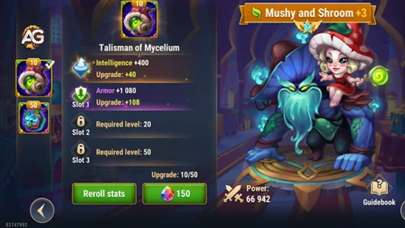
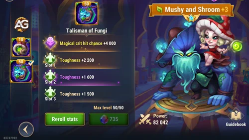

Cogu e Mélio estão entre os heróis mais dinâmicos e versáteis de Hero Wars Alliance, oferecendo uma mistura de profundidade estratégica e habilidades de alto impacto. Com sua sinergia única e um conjunto de ferramentas projetado para causar disrupção e dominar, esses heróis têm o poder de mudar o rumo da batalha quando usados de forma eficaz.
Este guia explorará suas habilidades, destacará seus pontos fortes e fornecerá dicas sobre como criar composições de equipe eficazes. Seja você um jogador experiente ou novo no jogo, dominar Mushy e Shroom acrescentará uma vantagem poderosa ao seu estilo de jogo.
Vamos embarcar nesta jornada para explorar como aproveitar todo o potencial de Mushy e Shroom, desde suas habilidades individuais até suas sinergias em equipe, garantindo seu sucesso no campo de batalha.
Ilustração de Cogu e Mélio, um personagem do jogo Hero Wars Alliance, desenvolvido pela Nexters.
Estatísticas principais de Cogu e Mélio
Tabela: Estatísticas principais de Cogu e Mélio
Atributo Principal
Detalhes
Posição:
Linha da Frente
Função:
Mago, Tanque
Estatísticas principal:
Inteligência
Facção:
Natureza
Herói ranque:
S
Hidra Ranque:
S+
Como conseguir:
Eventos, baú heroico
Tabela: Cogu e Mélio Tier List Geral
Tier List 2025
Ranque
Tier List Geral:
S
Tier List de Hidra:
S+
Maximizando o Potencial de Cogu e Mélio em Hero Wars Alliance: Uma Estratégia Detalhada
Em meio à batalha interminável pela supremacia em Hero Wars Alliance, surge um herói cujo potencial ainda não foi totalmente explorado: Cogu e Mélio. Com sua capacidade única de criar clones de Mélio e cogumelos avançando para causar dano devastador aos inimigos na linha de frente, Cogu e Mélio se destacam como uma adição valiosa a qualquer equipe. Neste artigo, vamos explorar estratégias detalhadas sobre como utilizar efetivamente esse herói único para obter a máxima vantagem tática.
Capacidades Únicas de Cogu e Mélio:
Cogu e Mélio são uma dupla dinâmica, oferecendo habilidades que podem desequilibrar a balança da batalha em seu favor. Sua habilidade de criar clones de Mélio e cogumelos que avançam não apenas causa danos significativos aos inimigos, mas também cria uma presença intimidadora no campo de batalha. No entanto, para aproveitar ao máximo essas habilidades, é crucial entender como combiná-las com outras habilidades de cura para garantir sua eficácia.
Estratégias de Equipe:
Para tirar o máximo proveito de Cogu e Mélio, é fundamental combiná-lo com outros heróis que possam fornecer cura aos aliados. Heróis como Martha, Celeste e Morrigan, conhecidos por suas habilidades de cura robustas, são escolhas ideais para acompanhar Cogu e Mélio no campo de batalha. Essa combinação cria uma sinergia poderosa, permitindo que os cogumelos e os clones de Mélio causem estragos enquanto são apoiados por uma constante fonte de cura.
Além disso, é importante considerar a composição da equipe como um todo ao montar uma estratégia em torno de Cogu e Mélio. Heróis que oferecem controle de multidão ou proteção adicional, como Jorgen ou Astaroth, podem complementar efetivamente a equipe, criando uma defesa sólida para garantir que Cogu e Mélio possam causar o máximo de estragos possível.
Subindo de Nível Cogu e Mélio:
Ao investir recursos para subir de nível Cogu e Mélio, os jogadores podem esperar um retorno significativo em sua eficácia no campo de batalha. Sua capacidade de criar clones de Mélio e cogumelos que avançam para causar dano torna-se ainda mais formidável à medida que suas estatísticas aumentam. Além disso, desbloquear e aprimorar suas habilidades também é fundamental para maximizar seu potencial.
Guia dos Talismã de Cogu e Mélio
Visão Geral do Talismã de Micélio
O Talismã de Micélio para Cogu e Mélio melhora significativamente as capacidades de Cogu, tornando-o um tanque único e poderoso em Hero Wars Alliance.
Aumentos de Atributos
Aumento de Inteligência: +2000 de Inteligência
Esse aumento se traduz em +6000 de Ataque Mágico adicional (3 de Ataque Mágico por ponto de Inteligência).
Também concede +2000 de Defesa Mágica (1 de Defesa Mágica por ponto de Inteligência).
Aumento de Armadura: até +19800 de Armadura distribuídos em 3 slots (6600 de Armadura por slot).
Vantagens Estratégicas do Talismã de Micélio
Cogu é o único tanque com o atributo principal Inteligência, o que proporciona vários benefícios únicos:
Força de Tanque Aumentada: A armadura extra torna Cogu muito mais resistente, permitindo absorver mais dano.
Ataque Mágico Aprimorado: O aumento no ataque mágico melhora as habilidades de Cogu e Mélio.
Clone de Mélio mais Forte: Com mais ataque mágico, o clone de Mélio se torna mais poderoso e com mais vida, funcionando como um segundo tanque.

Talismã do Micélio de Cogu e Mélio, Hero Wars Alliance.
Tabela de Estatísticas Detalhadas do Talismã de Micélio
Talismã de Cogu e Mélio – Detalhamento
Slot
Estatísticas
Pontos
0
Inteligência
+2000
1
Armadura
+6600
2
Armadura
+6600
3
Armadura
+6600
Impacto Geral do Talismã de Micélio
Com o Talismã de Cogu e Mélio, Cogu se torna um tanque formidável com aumento de armadura e inteligência. O ataque mágico aprimorado potencializa suas habilidades, tornando-o uma ameaça dupla no campo de batalha. A força adicional do clone de Mélio consolida ainda mais sua posição como um tanque único e poderoso em Hero Wars Alliance.
Como o Talismã dos Fungos Cogu e Mélio Melhora o Poder Mágico e a Resistência
Cogu é o único tanque em Hero Wars Alliance com atributos de mago, incluindo Inteligência como atributo principal, glifos de mago e artefatos de mago. Suas habilidades escalam principalmente com vida e parcialmente com ataque mágico.
Com o segundo talismã, Cogu e Mélio recebem um slot com +4000 de Chance de Acerto Crítico Mágico e três slots de Robustez, cada um podendo ser re-rolado até +2200.
Chance de Acerto Crítico Mágico:
🔸 Concede ao herói a chance de causar dano mágico aumentado. Só ativa ao causar dano mágico.
🔸 O dano crítico mágico é 2,5× mais forte que o dano normal.
🔸 Funciona como a Chance de Crítico normal, usando a fórmula: (Chance Crítico Mágico / (Chance Crítico Mágico + atributo principal do inimigo)) × 100%.
Robustez:
🔸 Reduz todo o dano recebido quando a vida do herói está baixa.
🔸 Aplica-se a dano físico, mágico e puro, mas não a perda de vida causada por habilidades de aliados.
🔸 Fórmula de redução de dano: (Robustez / (Robustez + atributo principal do inimigo)) × 100%.

Talismã dos Fungos de Cogu e Mélio, Hero Wars Alliance.
Impacto Geral do Talismã dos Fungos de Cogu e Mélio
O segundo talismã melhora significativamente o papel duplo de Cogu e Mélio como tanque de linha de frente durável e causador de dano mágico. A Chance de Crítico Mágico aumenta seu poder ofensivo, permitindo explosões de dano mágico, enquanto os slots de Robustez ampliam sua sobrevivência em momentos críticos da batalha. Essa combinação os torna mais confiáveis em combates prolongados e difíceis de derrubar, especialmente contra equipes que dependem de dano explosivo.
Cogu e Mélio Pontos Positivos e Negativos
Pontos Positivos
Resistente
Criar Clones do Mélio e cogumelos
Auto Cura do Mélio e cogumelos
Silencia inimigos
Pontos Negativos
Não tem habilidades exclusivas para os heróis da natureza
Depende de heróis com proporcionam bastante cura para ativar Mélio e Cogumelos rapidamente
Cogu e Mélio Prioridades de Evolução
Prioridade de Evolução de Glifos de Cogu e Mélio
Nos Glifos de Cogu e Mélio priorize vida, ataque mágico e inteligência para melhorar as habilidades. Depois suba de nível, armadura e defesa mágica.
Prioridades
Glifos
1ª
Vida
2ª
Ataque Mágico
3ª
Inteligência
4ª
Armadura
5ª
Defesa Mágica
Prioridade de Evolução de Artefatos de Cogu e Mélio
Nos artefatos de Cogu e Mélio priorize o artefato de livro para ganhar mais vida e ataque mágico que são as estatísticas principais para aumentar o poder das habilidades. Depois suba de nível a arma para ganhar armadura quando usar a Ultimate e por último o anel para ganhar mais ataque mágico e defesa mágica.
Prioridades
Artefatos
1ª
Livro
2ª
Arma (Armadura)
3ª
Anel
Prioridade de Evolução de Visuais para Cogu e Mélio
Ao aprimorar as skins de Cogu e Mélio, é importante seguir uma ordem de prioridade específica. Primeiro, melhore o visual angelical de vida e armadura para fortalecer suas capacidades de tanque na linha de frente. Em seguida, priorize a atualização da Super Skin para aumentar os ataques mágicos dentro de suas habilidades. Por fim, concentre-se em aumentar a inteligência e a defesa mágica para melhorar ainda mais o desempenho geral deles.
Cogu e Mélio são excelentes heróis para enfrentar as temíveis Hidras, sendo capazes de infligir danos significativos com suas habilidades. Quando combinados com outros heróis poderosos, como Aidan e Xe'Sha, formam um combo extremamente eficaz capaz de derrotar até as Hidras lendárias em uma única batalha.
Aqui estão algumas dicas essenciais para enfrentar as Hidras com sucesso:
1. Conheça as Fraquezas das Hidras
Antes de enfrentar as Hidras, é fundamental entender suas fraquezas e padrões de ataque. Identificar os momentos ideais para atacar e se defender é crucial para obter sucesso na batalha.
2. Sinergize Habilidades dos Heróis
Aproveite ao máximo as habilidades complementares dos seus heróis. Combinações como Cogu e Mélio, Aidan e Xe'Sha podem criar um sinergia poderosa que pode aniquilar as Hidras com eficiência.
3. Mantenha a Saúde dos Heróis
Manter a saúde dos seus heróis é essencial para enfrentar as Hidras com sucesso. Certifique-se de utilizar habilidades de cura e proteção para garantir que seus heróis permaneçam vivos durante toda a batalha.
4. Ataque com Estratégia
Não se precipite ao enfrentar as Hidras. Planeje seus ataques com cuidado, priorizando as habilidades e os momentos ideais para causar o máximo de dano possível.
Agora que você está armado com essas dicas, está pronto para enfrentar as temíveis Hidras com confiança e determinação. Prepare seus heróis, forme suas estratégias e entre na batalha com coragem!
Agora que exploramos as estratégias e habilidades de Cogu e Mélio em detalhes, é hora de recapitular o que aprendemos e como aplicar esses conhecimentos em batalha.
Cogu e Mélio oferecem uma abordagem única para o campo de batalha, com a capacidade de criar clones de Mélio e cogumelos poderosos que podem infligir danos devastadores aos inimigos. Ao incorporar Cogu e Mélio em sua equipe, você pode desfrutar de uma variedade de habilidades versáteis que podem ser usadas de forma estratégica para dominar seus oponentes.
Um aspecto crucial para usar Cogu e Mélio com eficácia é entender cada uma de suas habilidades e como elas se complementam. A cópia perfeita de Mélio pode confundir e distrair os inimigos, enquanto o Mycelium Ramificado pode ser uma ferramenta poderosa para controle de área e silenciamento. Sementes Podres e Crescimento Selvagem adicionam camadas adicionais de dano e sustentação, permitindo que você mantenha a pressão sobre seus adversários.
Além disso, é essencial criar sinergias eficazes com outros heróis em sua equipe. Combinações inteligentes, como Cogu e Mélio com Aidan e Xe'Sha, podem amplificar ainda mais o potencial destrutivo da equipe, tornando-se uma força imparável no campo de batalha.
Ao implementar essas estratégias e entender completamente o potencial de Cogu e Mélio, você estará preparado para enfrentar qualquer desafio que surgir em Hero Wars Alliance. Domine suas habilidades, coordene com sua equipe e alcance a vitória com Cogu e Mélio ao seu lado.
Sugestões de Vídeo:
Analisando Cogu e Mélio
Explore novas habilidades com nossos heróis em destaque!
Você gostou do nosso Guia de Cogo e Mélio para Hero Wars Mobile? Há algo que não entendeu ou gostaria de sugerir mudanças? Convidamos você a se juntar à nossa sessão de comentários na página do Alexandre Games Blog. Não hesite em expressar sua opinião, clarificar suas dúvidas e compartilhar sua sugestões. Clique no botão abaixo para começar:


 Guia do Alvanor Hero Wars Mobile
Guia do Alvanor Hero Wars Mobile Analise Visual Angelical
Analise Visual Angelical